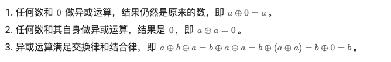
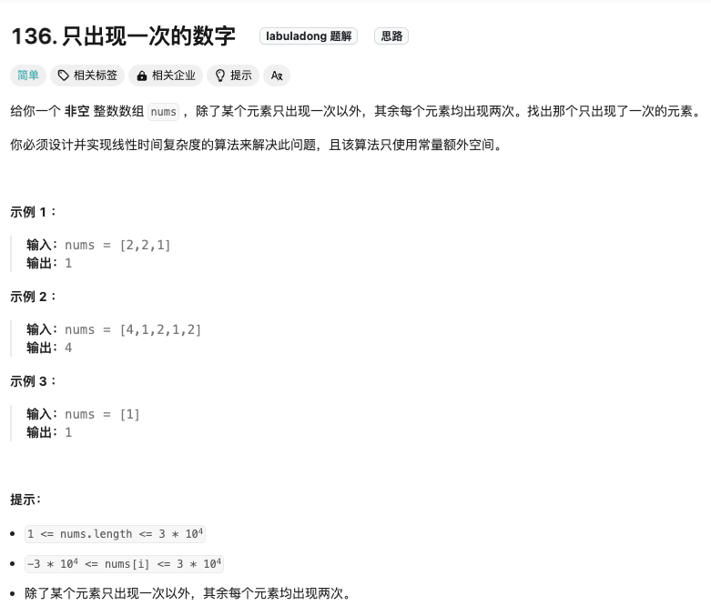
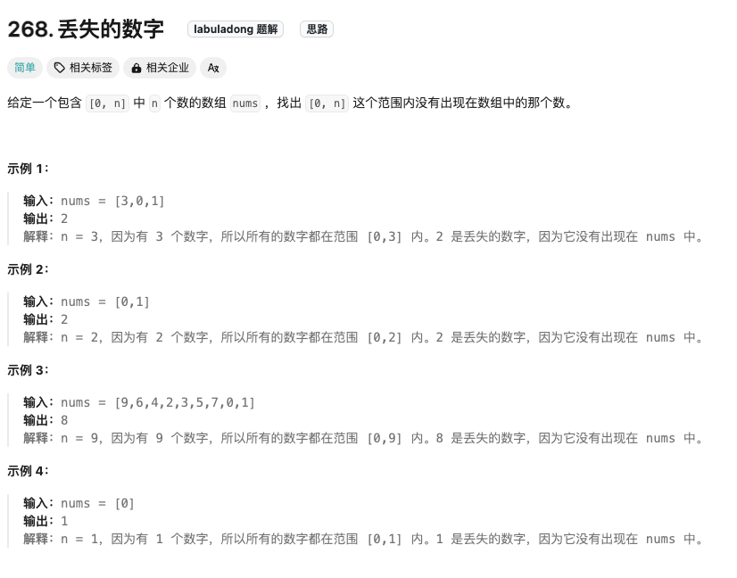

异或运算
异或运算有以下三个性质

数组中只出现一次的数字

Click to expand the code.时间复杂度为O（N），空间复杂度为O（1）.如果是用hash table空间复杂度是O（N）不满足题目要求，虽然也可以run通所有的样例
丢失的数字

Click to expand the code，用异或解题～
Click to expand the code。另外一种解法就是等差数列求和～